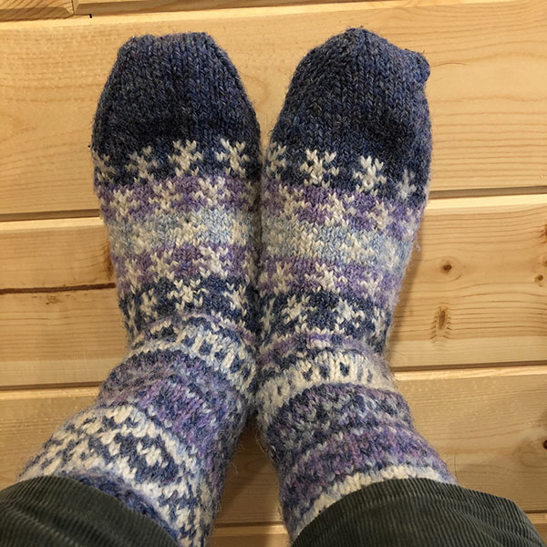
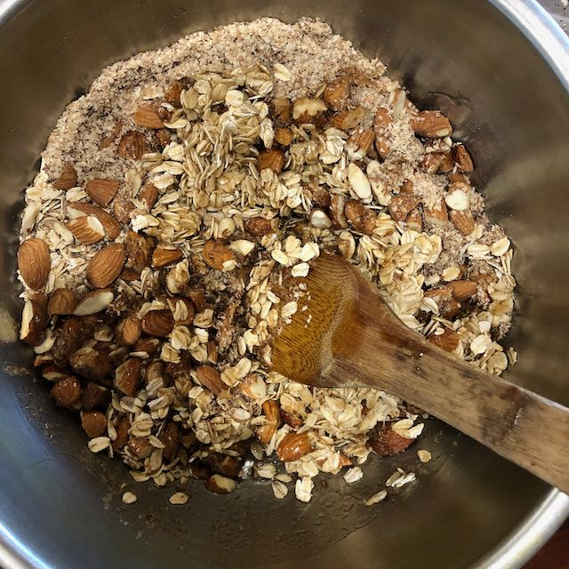
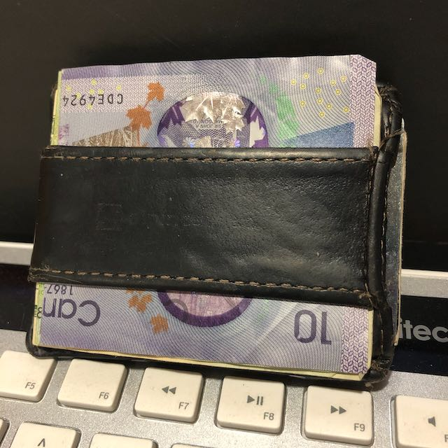

misc/Favorite possessions
Published 2020-09-09
A few of my very favorite physical possessions, in no particular order.
Hand-knit slipper socks

Slipper socks knitted for me by my wife’s grandma (thanks Lynn 😃). I wear them over a pair of wool socks and they’re the coziest thing ever.
Bamboo spatula

The humble bamboo spatula is one of my most used kitchen utensils. It mixes, it stirs, it scrapes, it serves.
Alpine Swiss front wallet

This $12 leather front wallet, purchased from Amazon in 2015. It’s held up fantastically—the leather has aged well, and not a stitch has broken.